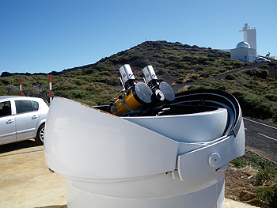

|
|
||||||
|
||||||
The NGTS Prototype

In the design phase, to test the photometric performance of critical
components a prototype equipped with a 1k×1k e2v CCD and a 8
inch Takahashi telescope was installed and tested in 2009 and 2010 on
sky at La Palma (Spain).
The NGTS prototype on La Palma.
The analysis of many series of observations with the prototype have fully verified the key performances of the selected design, in particular the photometric performance of the CCD and its low fringing level. During the winter 2009-2010, photometric measurements at the level of sub-mmag were obtained. The prototype proved capable of easily recovering transits of known systems and small planets such as the hot Neptune on GJ436. On photometric nights the data from the prototype has been shown to be white-noise dominated down to at least 0.5 mmag. This is in contrast to earlier wide-field surveys, such as WASP, which are limited by systematic noise at the level of several mmag even under the best conditions. The prototype results demonstrate that at I=10.5 magnitude, corresponding to K dwarfs of about V=12, a precision of 0.5 mmag is reached in 1h exposure time. Also that better than 1 mmag precision is reached at V=13th magnitude, fulfilling our science requirement.
Transit of the hot Neptune orbiting the M star GJ436, observed in 2010 with the NGTS prototype installed at La Palma
| ||||||